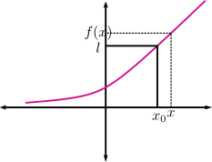
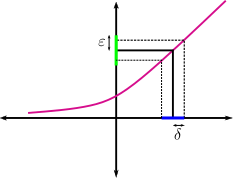
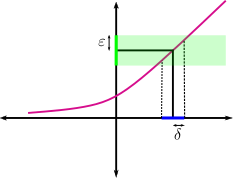
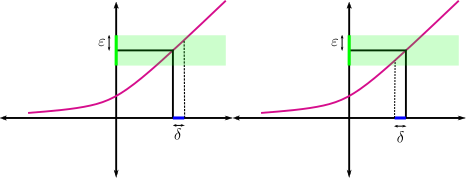
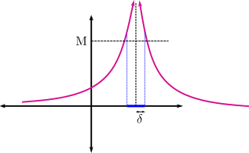
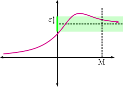
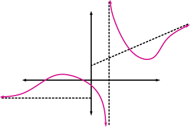

2.4. Limits#
2.4.1. Definition of limit#
The formal definition of limit was a tremendous step forward in mathematics, completed in the nineteenth century. It is the most important concept in calculus, since practically all the other definitions (continuity, derivatives, the Riemann integral, series, etc.) involve some kind of limit.
The concept of limit expresses the trend of a function when its variable approaches a certain value. Newton already formulated it in 1666 by saying that the main idea of limit is that quantities approach more closely than any given quantity. Starting from Newton’s idea, we are going to trace in a few lines a path of more than 200 years.
To begin, we will introduce the definition in the simplest case, namely the finite limit at a point.
We need a technical requirement. We will suppose that we have a function, \(f\), defined around a point \(x_0\in\mathbb{R}\), although it does not have to be defined at that point. That is, we assume there exists \(r>0\) such that \((x_0-r,x_0)\cup(x_0,x_0+r)\subset\mathrm{Dom}f\).
We want to define \(\displaystyle\lim_{x\to x_0}f(x)=l\), which, going a little beyond Newton’s definition, would be something like:
Tentative definition 1: We can make \(f(x)\) as close as we want to \(l\) by taking \(x\) sufficiently close to \(x_0\).
{kind=link}

But this definition is not rigorous in a formal sense. What does as close as we want mean? And sufficiently close? We must go one step further.
Tentative definition 2: The statement that \(f(x)\) is as close as we want to \(l\) can be expressed better by saying for any small distance, \(\epsilon\), around \(l\). And regarding \(x\) being sufficiently close to \(x_0\), this can be expressed by saying that there exists a small distance, \(\delta\), around \(x_0\).
We can now write a more formal definition of the limit, in words.
For any small distance \(\epsilon\) around \(l\), we can find another small distance \(\delta\) around \(x_0\), in such a way that if we choose \(x\) at a distance from \(x_0\) smaller than \(\delta\), then \(f(x)\) is at a distance from \(l\) smaller than \(\epsilon\).
This second definition is quite similar to the one Cauchy formulated around 1840, and it represented an enormous advance in mathematics. Cauchy said:
When the successive values assigned to a variable tend indefinitely to a fixed value, so that in the end they differ from it by as little as one wishes, this latter is called the limit of the others.
{kind=link}

It seems that Cauchy himself also introduced the now-famous notation \(\delta\) and \(\epsilon\)… Everything was ready for Weierstrass, around 1880, to give the definition we know today and which is usually written using mathematical notation. Why do it this way? There are two fundamental reasons. The first is that mathematical notation is universal; it can be understood by people from all over the world. The second is that it lets us write the same thing using much less space, which reduces the size of a mathematics book to reasonable dimensions.
Definition (Final definition)
This definition deserves a couple of comments:
The distance \(\delta\) depends on \(\epsilon\). If we choose a very small distance \(\epsilon\) around \(l\), it is clear that \(\delta\) will have to be very small for the definition to hold. In some books this dependence is written explicitly as \(\forall\epsilon>0, \exists\delta(\epsilon)>0\)…
We require that \(0<\left|x-x_0\right|\). Why? It is the same as requiring that \(x\not=x_0\). In this way we prevent the central point \(x_0\) itself from entering the definition of limit, which makes it more general and valid for points that may not belong to the domain of \(f\). This will be essential, for example, in the definition of derivative.
A very common graphical interpretation is the one shown in the following figure. The images of the points in the blue interval fall inside the green sector.
{kind=link}

Note: If you are looking for more information about the definition of limit, you can consult
Wikipedia: https://es.wikipedia.org/wiki/Límite_de_una_función,
this link from the National Technological University of Argentina: http://www.edutecne.utn.edu.ar/guias_de_estudio/limites.pdf.
There is an interesting property, which is a direct consequence of the definition of limit:
Property: If \(\displaystyle\lim_{x\to x_0}f(x)\) exists, then it is unique.
Proof: We will prove it by contradiction. We start by denying the conclusion (that the limit is unique) and we will arrive at a contradiction. So suppose that \(\displaystyle\lim_{x\to x_0}f(x)=l_1\) and at the same time \(\displaystyle\lim_{x\to x_0}f(x)=l_2\), with \(l_1\not= l_2\). Choosing \(\epsilon=\frac{\left|l_1-l_2\right|}{3}\) leads to a contradiction (why?).
\(\Box\)
Let us continue with some other important properties of limits.
Property: Let \(f,g:A\subset\mathbb{R}\rightarrow\mathbb{R}\), \(x_0\in A\). Suppose that \(f\) is bounded near \(x_0\) and that \(\displaystyle\lim_{x\to x_0}g(x)=0\).
Then \(\displaystyle\lim_{x\to x_0}(fg)(x)=0\).
Note: We want to emphasize again that \(fg\) means \(f\) multiplied by \(g\), NOT composition. The multiplication of functions is usually denoted by the absence of symbols (\(fg\)) or, if one wants to emphasize it, by \(f*g\). The composition is denoted by \(f\circ g\).
Property (Arithmetic properties of limits):
Let \(f,g:A\subset\mathbb{R}\rightarrow\mathbb{R}\), \(x_0\in A\). Suppose both functions have a finite limit at \(x_0\). Then
\(\displaystyle\lim_{x\to x_0}\left(\lambda f\right)(x)=\lambda\lim_{x\to x_0} f(x),\qquad\forall\lambda\in\mathbb{R}\),
\(\displaystyle\lim_{x\to x_0}\left(f\pm g\right)(x)=\left(\lim_{x\to x_0} f(x)\right)\pm\left(\lim_{x\to x_0} g(x)\right)\),
\(\displaystyle \lim_{x\to x_0}\left(fg\right)(x)=\left(\lim_{x\to x_0} f(x)\right)\left(\lim_{x\to x_0} g(x)\right)\),
\(\displaystyle \lim_{x\to x_0}\left(\frac{f}{g}\right)(x)=\frac{\displaystyle\lim_{x\to x_0} f(x)}{\displaystyle\lim_{x\to x_0} g(x)}\) if \(\displaystyle\lim_{x\to x_0} g(x)\not=0\).
2.4.2. One-sided limits#
We can now define one-sided limits. The idea is the same as the one we have just shown, but now we choose \(x\) either to the right of \(x_0\) or to its left. Then the absolute value \(|x-x_0|\) disappears. The one that cannot disappear is \(|f(x)-l|\), because, for example, even if \(x\) is smaller than \(x_0\), \(f(x)\) may be greater than \(l\) (if the function is decreasing).
Definition (one-sided limits):
We will say that the limit of \(f\), when \(x\) approaches \(x_0\) from the right, is \(l\) if
\[ \lim_{x\to x_0^+}f(x)=l:\Longleftrightarrow\left[\forall\epsilon>0, \exists\delta>0 \Big/ \; 0<x-x_0<\delta\Longrightarrow\left|f(x)-l\right|<\epsilon\right]. \]We will say that the limit of \(f\), when \(x\) approaches \(x_0\) from the left, is \(l\) if
\[ \lim_{x\to x_0^-}f(x)=l:\Longleftrightarrow\left[\forall\epsilon>0, \exists\delta>0 \Big/\; 0<x_0-x<\delta\Longrightarrow\left|f(x)-l\right|<\epsilon\right]. \]
We illustrate the idea in the following figure:
{kind=link}

The following property is evident in view of all these definitions.
Property:
\(\displaystyle\lim_{x\to x_0} f(x)\) exists if and only if both \(\displaystyle\lim_{x\to x_0^+}f(x)\) and \(\displaystyle\lim_{x\to x_0^-}f(x)\) exist and are equal.
This property is very useful for piecewise-defined functions. At the points where the function changes definition, one-sided limits are computed. If they exist and coincide, the function has a limit at that point. If one of them does not exist or both exist but do not coincide, the function does not have a limit at that point.
2.4.3. Infinite limits and limits at infinity#
Let us now look at some definitions of limits when one of the parameters is \(\infty\).
Definition (Infinite limits)
\(\displaystyle\lim_{x\to x_0}f(x)=+\infty:\Longleftrightarrow\left[\forall M>0, \exists\delta>0\Big/ 0<\left|x-x_0\right|<\delta\Rightarrow f(x)>M\right]\),
\(\displaystyle\lim_{x\to x_0}f(x)=-\infty:\Longleftrightarrow\left[\forall M>0, \exists\delta>0\Big/ 0<\left|x-x_0\right|<\delta\Rightarrow f(x)<-M\right]\).
{kind=link}

Definition (Limits at infinity)
\(\displaystyle\lim_{x\to +\infty}f(x)=l:\Longleftrightarrow\left[\forall \epsilon>0, \exists M>0\Big/ x>M\Rightarrow \left|f(x)-l\right|<\epsilon\right]\),
\(\displaystyle\lim_{x\to-\infty}f(x)=l:\Longleftrightarrow\left[\forall\epsilon>0, \exists M>0\Big/ x<-M\Rightarrow\left|f(x)-l\right|<\epsilon\right]\).
{kind=link}

2.4.4. Asymptotes#
Let us now recall how to compute asymptotes for a function.
Definition: Let \(f:\mathbb{R}\rightarrow\mathbb{R}\).
We will say that \(x=x_0\) is a vertical asymptote of \(f\) if
\[ \lim_{x\to x_0}f(x)=\pm\infty. \]In this type of asymptote, and in the other two types defined below, if the convergence occurs only from one side, we will speak of a vertical (horizontal or oblique, as appropriate) asymptote from the left or from the right.
We will say that \(y=l\) is a horizontal asymptote of \(f\) if
\[ \lim_{x\to\pm\infty}f(x)=l. \]We will say that the line \(y=mx+n\) is an oblique asymptote of \(f\) if
\[ \lim_{x\to\pm\infty}\left(f(x)-(mx+n)\right)=0. \]In this last case, to determine whether a function has oblique asymptotes, we proceed as follows. First we compute
\[ m=\lim_{x\to \pm\infty}\frac{f(x)}{x}, \]if this limit exists and is finite, we compute
\[ n=\lim_{x\to\pm\infty}\left(f(x)-mx\right). \]If this second limit also exists and is finite, the line \(y=mx+n\) is an oblique asymptote of \(f\). If either of the previous limits does not exist or is not finite, the function has no oblique asymptotes.
As a graphical example, in the following figure the plotted function has a horizontal asymptote at \(-\infty\), a vertical asymptote at \(x_{0}\), and an oblique asymptote at \(+\infty\).
{kind=link}

Note: If you want to know more about asymptotes, take a look at the following post on the magnificent mathematics blog gaussianos: https://www.gaussianos.com/calcular-las-asintotas-de-una-funcion/